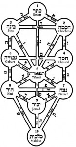
An omer is literally a sheaf of grain. The Jewish calendar fixes the holiday of Shavuot (also known as the “Feast of Weeks” or Pentecost to Christians) as 50 days after Passover. The holiday of Shavuot is when the first grain offering from the new crop (the “omer”) would be offered in the Temple. Judaism has supplanted the agricultural roots of these two festivals with deeper spiritual meaning. Instead simply being a celebration of Spring as many pagan holidays around the vernal equinox do, Passover celebrates freedom and the Exodus from Egypt. Instead of simply celebrating the harvest, Shavuot is the day we commemorate Moses receiving the Ten Commandments from God on Mount Sinai.
In a way, Shavuot is the purpose of Passover. The reason God liberated us from slavery wasn’t just so we could hang out at the mall and play with our electronic devices. It was so that we could receive the Torah and refine ourselves as people and a nation, dedicate ourselves to serving God and making the world a better place.
The period between Passover and Shavuot is therefore a bridge between our becoming free and the purpose of that freedom. It’s a time for spiritual preparation for the revelation to come.
Kabbalah teaches that God interacts with the world through channels called “sefirot.” There are ten of these channels; the upper three are so lofty that normal humans can’t access them. Our awareness and interaction is with the seven “lower” sefirot. The Kabbalists teach that there are 49 aspects to our personality, reflecting the seven lower sefirot times seven, each sefirah repeated within each sefirah. The seven lower sefirot are:
Each of the seven weeks of the omer is focused on one of these traits; each of the seven days of the week repeats the seven within that one trait, i.e, day one is chesed of chesed, day two is gevurah of chesed, etc. What is gevurah of chesed? It is the strength or discipline within love. So for example, when expressing love are you also able to express limits where appropriate, for example with your children?
The kabbalists by reflecting on “the trait of the day” we work on refining ourselves, improving ourselves. So this spiritual practice is sort of a mash-up of kabbalah (mysticism) and mussar (ethics).
I’m going to try (“bli neder,” without making a vow) to post something every day during the 49 days of the omer on the personality trait of that day. Other people have done similar things; there are different ways of understanding the sefirot, so this would be my interpretation.
Go to Day One↗︎︎ – Chesed of Chesed.
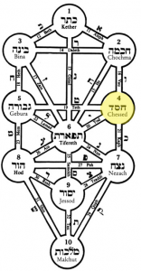
Chesed – literally lovingkindness – is the expansive force in the world. It is the light and the positive. It is love, compassion, caring, nurturing.
Love is the most powerful force in the world, and it takes many forms. Romantic love, the love of parents for children and vice verse; the love of friends. The rabbis were not shy about the power of love – that’s why Shir haShirim, the Song of Songs, is included in the Hebrew Bible. The Song of Songs is one long love poem, and it can be read both on the level of romantic love between a man and a woman, and the spiritual love between God and Israel. It’s no coincidence that we read the Song of Songs in the synagogue on Passover. Passover, “the spring holiday,” is a time of renewal. There’s a saying “love is in the air.” We start the period of the counting of the omer with this beautiful expression of love and chesed. Abraham is the one of our forefathers associated with chesed – he is famed for welcoming strangers into his tent.
How powerful is your love? How intense? Do you let your love really flow, or is something blocking it?
How expansive is your love? Are you able to include not just your immediate family, your “loved ones,” but others as well? Other Jews? Non-Jews? For us Israelis, does your chesed expand to include Palestinians and African refugees?
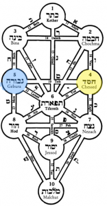
Chesed, the trait of the week is love. Today the aspect of love we consider is gevurah, which is “strength,” but also understood as judgment, restriction, discipline. In the creation of the world the expansive force of chesed, love, needed to be balanced, restrained, by gevurah.
The Talmud teaches “love without rebuke is not love.” Sometimes love needs to be tempered or strengthened with discipline. Loving your children often means setting boundaries. Sometimes love calls on us to say things that might be difficult to say. How does “strength” play into our love? Are we strong enough to say things to those we love that may be difficult to say or difficult to hear, if they are in fact things that need to be said? On the other hand, are we strong enough to refrain from saying things that would not be helpful? The Talmud also teaches that we only rebuke someone when we believe they will listen, they will be able to recognize and accept “constructive criticism.”
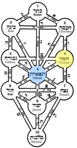
This entire week is focused on “chesed,” love. Today, the third day of the omer, we consider the aspect of “tiferet” in our love.
Tiferet, beauty, is also about harmony and balance. Tiferet is the ideal combination of chesed (love) on the one side and gevurah (strength or judgment) on the other side.
The kabbahlists teach that if the world were all chesed, you wouldn’t be able to see it – it would be like the rays of the sun being invisible inside the sun. And if the world were all gevurah, it would be all darkness with no light. Gevurah is needed to bring enough “dark” to make “light” visible – hence the world only exists because there is a balance, and that balance is tiferet.
The same is true in love. It’s easiest to see in the example of raising children. If your love for your children is all chesed with no gevurah, no discipline, your children probably won’t grow up to be happy, well-adjusted adults. Every parent knows kids need some guidance and some limits. Similarly too much gevurah is oppressive. The ideal is neither extreme – not parenting where you don’t set any borders, and not “helicopter parenting” where you tell your children exactly what to do every moment of the day. It may be a little less obvious in other love relationships, but the same principle does apply. In a romantic relationship, having too much gevurah might lead to excessive possessiveness and jealousy – and as the song goes, “love is a rose, but you better not pick it, only grows when it’s on the vine.” On the other hand, not having any boundaries might be confused with not caring, or not seeing anything special in a particular relationship. Mature love also succeeds in finding this balance.
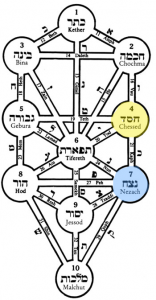
Does your love have staying power, or do you quickly fall in and out of love? Every relationship – not just romantic ones – has ups and downs. Has periods of greater closeness and periods of some distance. Life throws “challenges” at us, and those challenges have an impact on relationships with others. Sometimes despite loving someone we have misunderstandings or disagreements. Netzach of chesed is the trait that helps us weather those ups and downs. Our love endures through the inevitable trials and tribulations that go with life and relationships with other people if our love has endurance, has chesed has netzach. We can cultivate this trait by making commitments to our love relationships – the ultimate example, of course, is getting married. But making a commitment such as marriage is not enough to ensure that love will endure, as the high divorce rate shows. It also takes a commitment to keep working on the relationship, to putting energy into the relationship. Love is a marathon, not a sprint. Although maybe the exercise metaphor makes it sound like all work and no fun, and obviously that’s not the case. Maybe it’s more like a long leisurely journey by train than a quick short flight in a plane.
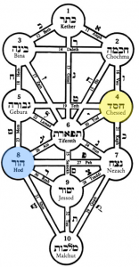
Sincerity is an important aspect of love. It connotes depth. It’s the difference between love and infatuation. Infatuation can be based on a false image; you can be infatuated with a movie star, but real love requires much greater depth and sincerity. As the Bee Gees put, “How deep is your love?”
Back to Day Four↗︎︎ Forward to Day Six
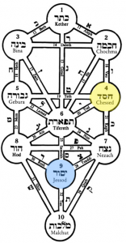
If you look on the chart of the sefirot to the left you can see that yesod sits in the center of all the sefirot that are above it. Yesod serves as the “foundation” that links everything in the “building,” the structure above, to malkhut, which could be thought of as the world below.
What is the foundation of your love? Is it built on the traits mentioned in the preceding days? Is it a healthy love, with both the expansiveness of pure chesed and the limits from gevurah? Is it based on a real appreciation and understanding of the other person? Is it healthy and reciprocal? Is the other person appropriate to receive your love and to give love to you? (You might want to be cautious about loving someone who’s known as an abuser, for example).
Yesod also represents bonding as it brings together the sefirot above it. Does your love have good bonding? Do you do activities together that bring you closer together?
Back to Day Five↗︎︎ Forward to Day Seven
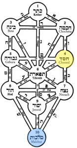
How is your love expressed? Do you act in a more positive way because of your love? Can others see your love? How do others reflect your love for them back to you? What are the tangible expressions of your love? What difference does your love and kindness make in the world around you?
Back to Day Six↗︎︎ Forward to Day Eight
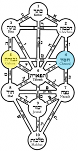
There are times when we have to judge others. When we have to discipline others. When we have to judge or discipline ourselves. But there are good ways and bad ways express this important aspect of our character.
Today the focus is on chesed, love. When we criticize someone, do we do it in a loving way? Is it coming from a place of love and concern, or is it coming out of desire to build ourselves up by tearing someone else down?
The Rambam (Maimonides) teaches that there is a proper way to rebuke someone – gently, and to start by telling them that you are only telling them this for their own good. The Talmud also says that “there is no one in this generation who knows how to give rebuke – or how to accept it!”
Criticizing and disciplining is not easy. But it should be coming from a place of love. Even for a judge sitting on his bench, his decisions should also be motivated by both a love of the society he/she is there to protect, but also out of concern for the guilty party, that he/she should learn to become a better person because of the sentence.
This also applies in the reception direction. Can you take criticism? Can you see that if someone is criticizing you they very well may be trying to help you, even if they are not expressing it in a loving way?
Back to Day Seven↗︎︎ Forward to Day Nine
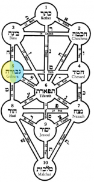
It may seem a little strange to ask if your discipline is disciplined, but it’s actually an important question.
When you criticize someone, do you do it in an appropriate manner? Are you able to keep any anger or negative feelings in check?
Gevurah is also “strength.” Can you control your strength, or does it sometimes get away from you?
A lot of problems happen when people lose the ability to control their critical side. The Talmud tells us that just as one is obligated to rebuke someone when you see him doing something wrong (it’s in the Torah, “you shall surely rebuke your neighbor…”) one is also obligated to REFRAIN from rebuking when you know the rebuke will not be heeded. Are you able to do that? Are you able to remember that your rebuke should come from the side of chesed, love, and if the other person isn’t ready to hear it, it won’t help him? In that situation you must have the discipline to refrain from disciplining the other person. Sometimes it’s hard. We can get so caught up in our sense of righteous indignation that we can’t stop our criticism from bursting out. That approach is not always helpful…
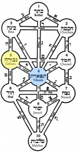
As a society sometimes it seems that we have lost the ability to criticize in a balanced way. Things seem to be getting more extreme. In America for much of the 60s and 70s the middle was the place to be. In the early 80s I voted for candidates from both parties, because you had candidates in the middle to choose between on nuanced reasons. Now everything seems much more polarized. The criticisms are much more extreme. People are no longer content to disagree, they engage in ad hominem attacks if you don’t agree with them. Here in Israel people on the left are portrayed as traitors who love Palestinians more than they love Jews and people on the right are branded as crazies who want to steal land.
Criticism needs to also listen. To be balanced. To understand mitigating factors. To understand the world does come in shades of gray.
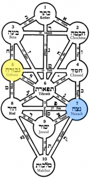
Any parent knows one of the secret to discipline is to be consistent. And any parent also knows it’s not necessarily that easy to be consistent. Many times we have good intentions about being consistent, but if a child is screaming, or if we’re in a hurry, or get distracted, we can sometimes give up and give in and the discipline goes out the window and instead of teaching the child what we wanted to teach, we teach a different lesson entirely: how to manipulate your parent to get what you want.
And that doesn’t even take into account the inconsistencies that can occur with two parents who aren’t in synch on disciplinary matters. That can multiply the problem as the child learns which parent to go to when with which request.
And this doesn’t only apply to parents; it applies in any situation where you discipline others. A manager needs to be consistent in how employees are disciplined. Playing favorites will destroy morale.
Endurance – staying consistent even when it’s not easy – is an important aspect of discipline.
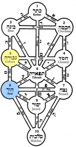
When disciplining/criticizing/judging others (something we all need to do at times, despite the bad rap discipline has with a lot of people of my baby boom generation) it’s important that it come from a place of humility. Criticizing others to build yourself up is a misuse of the power of gevurah. Gevurah should be used to help others, to give them constructive criticism, useful feedback that will help them improve.
Maimonides taught that before rebuking someone it is important to check your own motivations and make sure it is truly for the other person’s benefit. If it’s not, keep it to yourself.
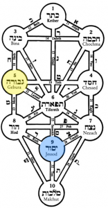
What’s the foundation for your discipline? Is it based on awareness of all the principles we’ve explored earlier this week? Is it based on a concern for others? When you discipline or criticize another person does it foster “bonding,” or does it foster distance? Normally criticism results in distance. It takes a great deal of effort for discipline or criticism to be something that can draw people together. But if it’s both given and received constructively, it can help, not harm a relationship.
Back to Day 12 ↗︎︎ Forward to Day 14↗︎︎
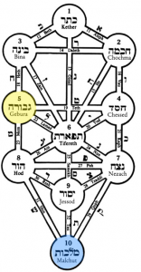
How does your gevurah, your strength/discipline/judgment manifest itself? Are you able to apply this powerful trait for the benefit of the world around you? Are you consistent? Do others respect your judgment and see your discipline as fair?
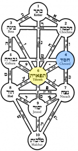
Tiferet literally is “beauty,” but it’s about a lot more than beauty. Tiferet is fundamentally about compassion and balance. Tiferet represents the balance between chesed (love) and gevurah (strength/discipline/judgment). Tiferet is also associated with truth.
There is a real connection between beauty and balance; studies show that it’s universal to see a symmetrical face as more beautiful than an asymmetrical face. As I recall, this is not cultural – it seems to be hard-wired into us, which makes sense because an asymmetrical face could be an indicator of some sort of medical issue, which biologically would make the person a less desirable mate. Thank God we can transcend our biological programming, etc., but we do seem to be programmed to see balance, symmetry, as beautiful.
Compassion is a blend of love and judgment. You can love anyone; but compassion is only aroused for someone who is first judged to be needy or in pain or trouble. We are cautioned against judging others strictly, but rather we should have compassion and give people the benefit of the doubt.
Kabbalah teaches that the world could not exist if it were either all chesed or all gevurah. All chesed and the world would disappear, as the rays of the sun inside the sun. Too much light. And none of us could survive strict judgment – we are all flawed. So in a sense the world only exists because of tiferet, the balance between chesed and gevurah.
We also need balance in our lives. Think of what it means when we say someone is “unbalanced,” or “knocked out of kilter.” Meditators are taught to seek their center.
Today’s aspect of tiferet that we consider is chesed, or love. It might seem a little odd to consider the “love aspect of compassion,” but it’s not. Compassion can be impersonal; love is personal. Writing out a check to a charity that helps homeless people is an act of compassion. When you turn toward a homeless beggar on the street and not only give him/her something, but acknowledge his/her existence with eye contact and a smile – you are expressing compassion with love. You are showing chesed of tiferet. This is the ideal way to show compassion toward others.
For a deeper exploration of the topic of how we give to beggars, see my blog post from Ki Tisa 5765, “Giving to Everyone↗︎︎.”
May you not only have compassion, but may your compassion be expressed with love and care.
Back to Day 14↗︎︎
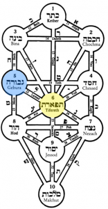
Today we look at the gevurah aspect of tiferet. Gevurah is about applying judgment. Compassion is not necessarily “blind” or equal to everyone. Rambam teaches that there are different levels of giving, and different priorities in charity. You take care of your family first; people in your town first, then your country, etc. In terms of levels of giving, the highest is giving someone a job so he/she can support himself. The lowest is giving an inadequate amount grudgingly, but even that is still “on the ladder” and you get some credit for it.
Do you apply appropriate judgement in your compassion? It could be that sometimes what the person needs isn’t what the person is asking for. If you give substantial amounts to organizations, do you verify how much of the donations go to administrative expenses versus what goes to actually helping people? Do you take time to understand which are the most important and effective places for you to give your time and money?
Back to Day 15↗︎︎
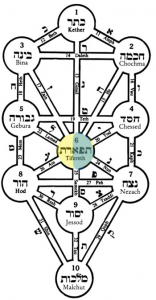
Ideally our compassion extends to all living creatures. We are taught that the ideal in Judaism is to be a vegetarian; the permission to eat meat at all is a compromise because an animal had to give it’s life.
Not only are we commanded to love our neighbor as ourselves, we are commanded to pay attention to animals as well, and it doesn’t matter who owns the animal. The Torah commands us to help raise an animal owned by our enemy if it falls under its burden. There is a midrash that says Moses was appointed shepherd of the Jewish people because God saw that he was compassionate toward the sheep that were under his care. The Talmud tells us Rabbi Yehuda haNasi determined he was being punished for not feeling compassion toward a calf that was destined for slaughter.
The world can be a cruel and difficult place. The need for compassion is endless. The way we respond to suffering is a true mark of the quality of our characters.
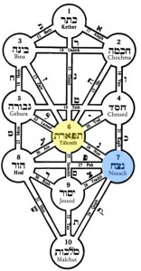
It’s easy to be compassionate in a short burst. You can see something that arouses your compassion, do something to help, whether it’s write a check or drop a coin in a box, or provide some physical assistance. Sometimes that may be all that’s needed. But in many cases it takes more than that. Are you able to maintain your compassion and giving, even in the face of problems or issues that seem intractable?
God is a role model for us. God sustained the people of Israel with manna from heaven during forty years of wandering in the desert. That compassion lasted throughout ups and downs, including times when the Israelites perhaps seemed not so worthy of compassion, like when they were on one of their many complaining marathons.
Tiferet is also “balance,” as it’s the balance between chesed (love) and gevurah (discipline) and endurance is also important in balance. Are you able to keep your balance, to maintain your center, even when life throws “challenges” your way? If not, are there things you can do to help you keep your balance? For me, I find exercise is a great way to help keep my balance. I find there’s nothing like a run for getting stress and adrenalin out of my system. To help restore my equilibrium. Cocktail hour is good too. Taking time to stop, pause, have time for yourself, can be great ways to restore your balance…and if you’re going to be compassionate all the time, you need to keep your balance! 🙂
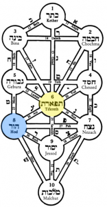
People involved in the non-profit world know that it’s much easier to raise money for buildings than for operating expenses. Wealthy people often love to put their name on tangible objects. They express compassion by giving money to build a new wing in a hospital, but it’s not humble to put your name on the building.
It’s not a terrible thing; the world is still made better by the new wing in the hospital. But Rambam teaches it’s greater to give anonymously. According to his eight levels of charity↗︎︎, the highest level is helping someone avoid becoming impoverished, helping them to take care of themselves. The second highest level is when neither the donor nor the recipient know each other. This is a level with humility – the donation is not made to “show off.” If the donor knows who he is giving to, regardless of whether the recipient knows who the donor is, he may feel “superior,” or pity the other person. If the recipient knows who the donor is, regardless of whether the donor knows who the recipient is, he may feel a burden of being in someone’s debt.
One should not allow the fact that one is able to give money to others to allow one to feel superior. The Talmud teaches that nothing stays the same; the one who is rich today may be poor tomorrow and the one who is poor today may be rich tomorrow. If God has been generous to you, being compassionate and giving to others is simply doing what you were put here to do. Haughtiness in giving is unseemly.
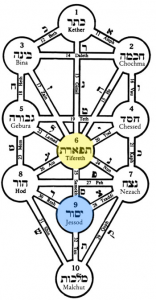
Compassion can be based on many different things. Some religious people are compassionate because they believe it’s what God is telling them to do. Some people are compassionate because it intellectually seems to be the right thing to do. But true compassion is based on real caring for other people. The rabbis have several teachings about this, how important it is to have a generous, giving nature. They teach that all are obligated to give charity even someone who is on charity himself. Why should someone who is on charity himself be obligated to give charity? Wouldn’t it be more efficient to “skip the middle man,” and just bypass giving money to someone who will give it to someone else?
The reason isn’t so much practical as it is because of the impact on the giver’s character. When the recipient of charity gives to others, he sees others. His compassion is aroused for others and rather than perhaps just getting lost in his own pain and suffering he can also see others need help too. He can also see that he’s not just a “taker,” that no one can be just a “taker” that everyone has to also be a “giver.”
And this is really the point of the whole exercise of looking at different personality traits each of the 49 days of the omer. To help us reflect and refine our personality traits. To at least cultivate some awareness of where we need to go to become better people.
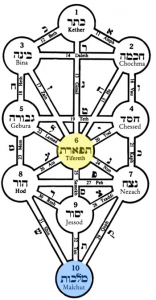
When it comes to compassion, are you a follower or a leader? Do you take initiative when someone needs help, or wait for someone else to take the lead?
In 1964 Kitty Genovese was murdered in New York City. It was widely reported that her neighbors were aware that something was wrong but no one called the police. Even though the facts in the case are disputed, it became the archetype for people being bystanders to a crime and not doing anything – they even call that the “Genovese effect.” It’s especially used relating to diffused responsibility – situations where someone should do something, but there’s no one person responsible.
People who heard Genovese’s screams might have felt some compassion, but none of them took the lead to make a phone call that conceivably could have helped save her life. The Torah commands us not to behave in such a fashion: “You shall not stand idly by the blood of your neighbor.” Also “You shall not turn a blind eye to your poor brother.” When someone is in trouble we can’t wait for someone else to act and only then engage. We must take initiative. We must show leadership in our compassion.
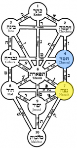
Netzach literally means “eternity.” Hence as a personality trait we interpret that as enduring, lasting. The same basic word though also means to win or overcome. Clearly winning often depends on having endurance. One of the reasons the British were able to emerge victorious in WWII was they had the tenacity and the endurance to hang on until America could get fully mobilized and help fight the war against the Nazis.
Last month I ran a full marathon, 42.2 km (26.1 miles), for the first time. For me that was personally a great lesson on endurance. It wasn’t even the marathon itself that took the great endurance, although it certainly took a lot. It was the months of training for the marathon ahead of time. Pushing myself to go out and train even when the weather was cold, or rainy, or otherwise unpleasant. Especially in a marathon, it becomes obvious that to win, you must go the distance. And most of the things we pursue in life – an education, a career, a family – are marathons, not sprints.
The first day of the week of netzach we look at the chesed, or love, aspects of netzach.
As you push yourself to stick with things – whether it’s school, a diet, an exercise program – are you able to do it in a loving way? Or do you become a source of aggravation to all around you when you are pushing yourself?
What about the object of your endurance? It’s much easier to stick with something such as exercise program if you’re doing something you love. Finding what you love about an activity can help you stick with it.
As mentioned above, netzach also means victory. Are you “loving” in victory? Are you a good winner?
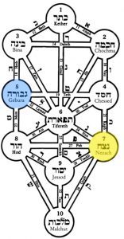
The very same trait that is your greatest weakness can be your greatest strength. With no trait is this perhaps as clear as it is with endurance.
The negative side of endurance, sticking with things, is addiction to harmful substances, or stubbornly clinging to negative behaviors and thoughts. I had an employee once who clung to his alcoholism until it totally destroyed his life; only after he hit rock bottom was he able to start over and rebuild.
The positive side of endurance is being able to stick with positive programs – be they diet,
exercise, learning, meditating, volunteering. I’ve been blessed with an abundance of “netzach.” I recently finished my first full marathon, running 42km (26 miles) and a few months before that I completed running/hiking 1,100 km, 700 miles, over a couple of years, the entire Israel Trail. I’ve also been able to stick with demanding intellectual pursuits, such as finishing the seven and a half year long Daf Yomi cycle to study the entire Babylonian Talmud.One aspect of gevurah is “discernment.” Using your judgment. Are you applying your endurance in a positive direction? Are you tenacious about good things, such as a healthy diet, exercise, learning, accomplishing difficult tasks such as writing a book? Or are you tenacious about things that are bad for you such as an unhealthy diet or dysfunctional attitudes?
If you find yourself tenacious about bad habits the ideal is to figure out a way to transform that negative side of the trait to something positive. Making that shift is not always easy.
When I was a teenager I had some very bad habits. I don’t need to go into exactly what they were, but if I say I was a rebellious teenager in the early 70s you could probably figure it out. I intuitively understood that if I was going to break the bad habits and find good habits I needed some big changes in my life – I especially needed to change the people I was hanging out with, and the only way that was going to happen was with a change in geography. So I joined the US Army. A little radical, but it worked. I left my bad habits behind and found new good habits that I’ve been blessed to be able to stick with for the last forty years.
The Talmud talks about the power of habit – how it builds things that endure. For good or bad – on the bad side, the Talmud teaches that if a person does the same sin twice it becomes permitted to him. Not, God forbid, that a sin literally becomes permitted – but rather it becomes “as if” it were permitted to him, and he’ll just keep doing the same sin over and over. On the positive side, doing something good three times creates a “chazakah,” an assumption that it’s now an ingrained habit/custom that the person will stick with.
Switching the focus of your endurance from negative things to positive things is not necessarily an easy task. Everyone has to find what works for them, whether it’s cultivating new friends, joining a support group, changing what you read, or praying for help and strength. But if you seem stubbornly mired in some negative things, just remember that the stubbornness has the possibility to be your greatest strength as well, if you can figure out how to apply it in the right direction.
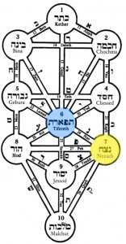
Staying power, endurance is a really important trait. We don’t accomplish anything if we don’t have the endurance to finish things.
But sometimes we get carried away. We lose the balance in our pursuit of endurance.
I had a VERY powerful reminder of this a few weeks ago. I decided to push myself and try and do a long bike ride from Jerusalem to Tel Aviv, off road, in one day. 125km. Turned out to be a hot day, and the course was much more difficult than I thought it would be.
But I’m a tenacious guy. I’m not a quitter. I kept going. I pushed myself hard. I
didn’t make it as far as Tel Aviv, but I did cover 90km off road in the heat over the course of about 11 hours. I was careful to drink a lot of water.Despite drinking a lot of water however, I got myself out of balance. Literally out of balance: I seriously depleted my electrolytes. The next morning I felt horrible. Went to the emergency room. At one point my magnesium levels were so low that I was shaking uncontrollably. It was very scary – I thought I was going to go into convulsions or something.
The medical staff “restored my balance.” They pumped electrolytes back into my system. It took time though – it was about 18 hours after they started the electrolyte therapy before I felt OK again.
I was so focused on my “endurance,” on pushing myself, that I let myself get physically out of balance. I’ll never do that again!
That experience may have been a dramatic way to do it, but we can also let our endurance get out of whack in other ways. We can get so focused on accomplishing a goal that we neglect other things in our life that are important. It’s great to want to get that next promotion at work, or to be laser-focused on a goal such as writing a book, but if that focus and endurance causes a loss of balance – for example, neglecting family – the end result can turn out to be bad.
So cultivate your endurance, stick to things, get things done…but don’t lose your balance in the process!
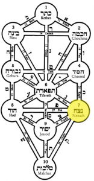
The Jewish people as a whole are good on endurance. Forty years of wandering in the desert. 2,000 years of exile, and yet somehow we managed to keep our religion and our dreams alive.
Everyone faces different challenges in their lives. For some people it’s a challenge just making it through the day, as described in the song “Please Mister Can’t Go On” by Tom Paxton (couldn’t find it on YouTube):
I say, “Please Mister Can’t-Go-On, you can go on one more day
The time to decide is still twenty-four hours away
If you still feel the same, then I’ll still have the same thing to say”
I’ll say, “Mister Can’t-Go-On, you can go on one more day”
That advice applies to all sorts of challenges we face. It’s easier to endure if you take it in “bite size” pieces. Another day, another mile, another page.
Hod of Netzach: Humility of Endurance. Netzach is endurance, and endurance is associated with strength, prevailing, going the distance. Hod, or humility, is associated with yielding, giving way – similarly contradictory traits.
But sometimes to endure we need to know when to yield. Earthquake building codes call for buildings to be able to sway, to yield. Sometimes very tall buildings can sway a scary amount if you’re on a top floor in an earthquake. Yet that yielding is what allows the building to endure. If the building was completely rigid, and the earthquake was strong enough, the building would just break when the force was great enough. Yielding allows it to endure a greater force.
It can be the same way in our lives. People who are unyielding can feel shattered when life throws something unexpected at them. Being able to give way, to be flexible when necessary, can help you weather life’s storms and earthquakes more successfully than being unbending. Do you know when to give a little?
Yesod of Netzach: Foundation of Endurance. Yesod is the base, or the foundation, also connection. What is the foundation, the source, of your endurance? Is it your own inner resources? Is it the love and support of friends and family? Is it your experiences that have shaped your approach to life? Are you physically up to the challenges coming your way?
No building can stand on a shaky foundation. It’s important to tend to things, experiences, and people in your life that give you strength to hang on and endure.
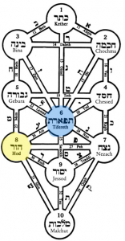
This week’s trait, humility, is an essential ingredient to personal growth. You can’t learn if you’re not humble enough to think you have something TO learn.
Balance can mean knowing the difference between humility and low self-esteem: they are not the same thing at all. One can have lots of self esteem and still be humble. Alternatively, one can have low self-esteem but still NOT be humble. True humility finds the right balance – it’s not about low self-esteem.
Tiferet is also compassion – another reason humility is not the same as low self-esteem. True humility is driven by caring for and about other people. About believing you have things you can learn from other people. Having humility helps one to be more compassionate – if you feel superior to other people it can be much more difficult to find compassion in your heart.
Netzach of Hod: Endurance of Humility.
Netzach is strength, endurance, even victory. Which seems somewhat contrary to humility. But that’s only on an apparent level. Humility does not mean weak. Someone who’s humble isn’t necessarily a “pushover.” Moses was the humblest man of all, yet he was also a strong and capable leader. Does your humility remain intact even in the face of challenges? Humility can be a challenge for congregational rabbis: we’re visible public figures in our community, and we often get feedback that could easily boost our egos and challenge our humility (“great sermon, rabbi!”). There’s a story in the Talmud that when one rabbi started getting a little proud of his Torah scholarship, one colleague told him, “don’t be so full of yourself, this is what you were created for.”
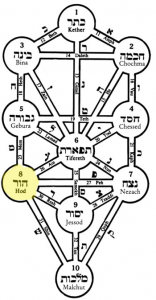
As such, Rashbi is an appropriate symbol for today’s character trait, humility. He’s one of the premier mystics in the Jewish tradition, and mystics are known for both deep learning of esoteric subjects, and a deep spiritual connection with God. Both of those things require humility. Learning requires having the humility to admit you don’t know something. A deep connection with God requires being aware of your smallness compared to God’s greatness.
Mussar teaches us
Always seek to learn wisdom from every man, to recognize your failings and correct them. In doing so you will learn to stop thinking about your virtues and you will take your mind off your friend’s faults.
The book of Proverbs tells us “every proud man is a fool.”
There is a teaching where God says “I cannot abide in the same space with a haughty spirit.” If you are proud and full of yourself you have no room for God in your heart.
Today, hod of hod, is focused on the essence of humility. How authentic is your humility? You have to be careful not to take pride in how humble you are!
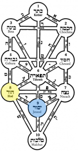
Malchut is sovereignty, leadership, as well as dignity. Being humble does not mean being a slob. Being humble is not the same as thinking you are worthless. One should be humble with dignity. Even the most humble surroundings can be made dignified by taking proper care of them, and it’s the same with our personalities. The rabbis caution us to always find the middle ground. There’s a teaching from Rabbi Simcha Bunim of Pzhysha, who told his students they should carry around two pieces of paper. On one is written, “I am nothing but dust and ashes,” and on the other “The world was created for my sake.” If you feel too full of yourself, remind yourself that you are nothing but dust and ashes. If you feel too low, too humbled, remind yourself that God created the world for your sake. Both are true at the same time. Our sovereignty and our humility ideally co-exist.
Connection and foundation are related. The foundation of a building ties all the pieces together. A building can’t stand with a weak foundation.
“Bonding” is also foundational for our lives. There is a saying, “no man is an island.” We are all depending on others. The bonds that connect us to others are fundamental to our humanity. Our connections go out in all directions – connecting to God, connecting to our fellow Jews, connecting to all mankind. Connecting to family and loved ones.
Chesed, lovingkindness, is the root for all bonding and connecting with others. In other contexts our personality traits can be a one way street – something we express toward others. In bonding, however, there is an implied mutuality – the energy flowing both ways.
Are your foundations built on love?
Yesod is the foundation, and it is also bonding, as this sefirah brings together everything above, and Gevurah is strength and discipline. Bonding, connecting with others, is hard work. It doesn’t happen on autopilot. There are many studies that show the importance of friendship. People with a good base of friends not only are happier, they live longer. Dr. Vivek Murthy, the Surgeon General of the United States has been speaking out about the dangers of loneliness – he says the data shows loneliness is as bad for your health as smoking. In an opinion piece↗︎︎ in the NYTimes, he shared how he had allowed himself to grow distant from his friends. To keep your bonds strong requires making an effort. Don’t wait for your friends to pick up the phone or send a message. It is absolutely worth the effort to maintain those friendships. I’m about to retire, and I’m very grateful for the network of friends I have who I will be able to spend time with when I have more time. Apply some discipline to your bonding – set regular times to call friends or do things together.
Tiferet is balance – love and discipline in just the right measures, also beauty. The trait for this week is yesod, bonding, the foundation. We often think of our bonds with other people as being driven entirely by love, but discipline and judgement may also be part of the equation. The Talmud tells us “Love without criticism is not love.” If you love someone, you care enough to want them to be their best possible self. We all have aspects where we can do better. If our friends don’t point them out, who will? If someone who’s not a friend points them out, would we listen? But clearly any criticism, no matter how helpful, of a friend must also be done with love, and that’s tiferet. All criticism, unaccompanied by love, and the bond will be destroyed.
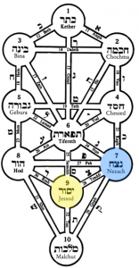
Do your bonds endure?
All too often our bonds seem ephemeral, based on superficial traits or qualities. As Jimmy Cox put it in his jazz standard, “No one knows you when you’re down and out” (I like the Eric Clapton version):
Once I lived the life of a millionaire, spendin’ my money I didn’t care
I carried my friends out for a good time, buying bootleg liquor, champagne and wine
When I begin to fall so low, I didn’t have a friend and no place to go
So if I ever get my hand on a dollar again, I’m gonna hold on to it ’til them eagles grin
Nobody knows you, when you down and out
In my pocket not one penny, and my friends I haven’t any …
The Tanakh gives us a great example of a bond that endures – the friendship between Jonathan and David. Jonathan protected his friend David from his father’s wrath. He was loyal to David, and never gave any signs of being jealous of David’s accomplishments or popularity. He was a loyal friend to the end.
Yesod is also “foundation,” and a solid, enduring foundation is clearly essential to any structure. A remarkable image from a few years ago shows the impact of a shoddy foundation: a skyscraper that toppled over, laying on its side on the ground. Unable to function. It’s the same with our personalities. If we have a solid foundation for who we are, we can whether all sorts of storms and calamities.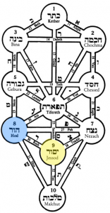
Today is the 40th day of the counting of the omer. 40 days is a biblically interesting number. On the one hand it seems to be used just as a symbol for a moderately large number. On the other hand, it’s clearly associated with judgement and tests or trials. When God brought the flood in Noah’s generation it rained 40 days and nights. Moses was on the mountain fasting, waiting to receive God’s revelation of the ten commandments for 40 days and nights. The spies scouted out the land for 40 days, and the Israelites wandered in the desert for 40 years. There are several more examples.
But this time 40 days isn’t enough. We have to wait another ten days yet for the revelation that comes to us on Shavuot. Fortunately, unlike Moses, we haven’t had to fast while we were waiting!
True bonding with other people requires humility. If your ego fills up all your inner space you don’t have room for anyone else – you won’t really see them as they are. We’ve all experienced this at times, probably on both sides. In a conversation, if all a person is thinking about is what to say next – as opposed to taking the time to listen to the other person – a lack of humility is blocking bonding. You don’t bond so much with people who do an impressive job of talking – you bond more with people who do an impressive job of listening.
Being a good listener though means having some humility. If you are full of pride, your transmitter is stuck in the “on” position because you feel what you have to say is more important than what anyone else could possibly have to say.
Today, when we focus on “hod of yesod,” “Humility in bonding,” is a good day to pay attention to our interactions with others, and to try and bring a little more humility and be a better listener.
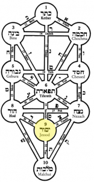
The connection is perhaps reflected in the expression that someone has “his act together.” Having your act together is a good foundation, a good basis for a healthy personality.
Psychologists talk about the “integrated personality” as a healthy personality. Things are balanced. In our kabbalistic scheme, there are appropriate amounts of the traits above, love, discipline, etc., in balance.
The balance goes beyond just our personalities – we also need to balance different realms of our lives, body, mind, and soul. It’s a good practice to find time everyday for things that nourish all three — exercise, thinking, and prayer.
Malchut is not only leadership and sovereignty; it is also symbolic of the not just the king, but the king of kings, of God. The kabbalists teach that Malchut is the sefirah through which God becomes manifest in our world. To we bring God into our connections with other people? Can we see the divine in our friends? Do our relationships help make God’s presence greater in the world, or God forbid do they diminish God’s presence? As we are all created by God, when we interact with others, when we bond with others, we are also bonding with God. Recognizing the holy spark in others can be a way to find a bond even with people you would not normally expect to find a connection with. Rebbe Nachman taught it is important to go to the lowest most base places, and raise the holy sparks in the people who are there. Our circle of bonding becomes much larger when we can see the Godly in everyone.
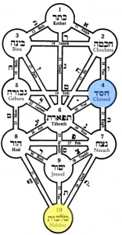
The lowest of the sefirot in the kabbalistic conception of the Godhead, malchut also represents the level of the “shechinah,” the female aspect of the divine presence, and the level where God’s presence becomes manifest in the world.
Just as malchut is the place where God’s leadership is manifest it is where our leadership is manifest. It’s the level of “actualization,” the intersection of our inner world with the outer world. It’s a very important junction.
Leadership is a two-way street. Nations often get the leaders they deserve. Only a society that has a lot of corruption would generate and tolerate corrupt leadership. Those being led also reflect back to the leadership the traits that they believe the leadership wants to see. People learn from example.
Today we explore chesed, lovingkindness, in leadership / sovereignty. We all have aspects of our life where we have “sovereignty,” where we take the lead (and we also all have places and times when we are led). Does your leadership express itself with care for others? When you are in a leadership role, do people feel affection for you as well as they recognize your capabilities for the task at hand and your concern for others?
Love is a much stronger basis for enduring leadership than fear. A relationship based on love can endure forever. Fear depends on the continued maintenance of fear. If the balance of power shifts there is no fear; and those being led will continually be trying to find ways to shift the balance of power.
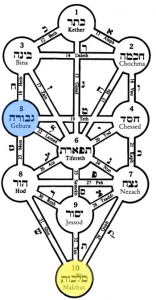
Leaders often must be strong disciplinarians, but they also have to execute proper judgment, and be fair.
My first “management job” was running a Taco Bell in Denver. Employees had been stealing money from the cash registers, and my predecessor was being moved into a different position. My first task was to stop the thieving.
I had pretty much no management training, but I was recently discharged from the US Army, so I at least had a little experience with discipline. My first day on the job I called a meeting of all the employees. I carefully explained the policies about accounting for cash, and that no shortages would be tolerated. Two days later when I came in and did the cash accounting in the morning, we were $35 short; I fired the shift manager, who was surprised that I was serious with what I said. “But it’s just a loan, the money sometimes shows up later.” Sorry, I wasn’t buying it. Within a week a few other employees left, but the theft problem was solved, thanks to a leadership approach that exhibited gevurah: it was both fair and disciplined.
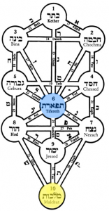
One of my daughters is studying for her Tanakh bagrut (Bible portion of her matriculation exams) and last night I was studying with her (any excuse to study Torah with my kids!) and the subject was “leadership.” We were looking at Exodus chapter 2 to see if we could find reasons why Moses was chosen for his leadership role.
One of the things that’s very clear is Moses had true compassion. Very specifically, he had a kind of compassion that does seem to be the balance between love and judgment, which is what tiferet represents.
He sees an Egyptian man striking a Hebrew slave, and his compassion is aroused – he intervenes, killing the Egyptian. He sees two Hebrews arguing, and his care and concern cause him to intervene, he sees that one of them is wicked and he comes to the defense of the other. The next episode is when he helps a Midianite woman (his future wife) water her flock.
Compassion is a critical trait for a leader. There are elements of leadership that are simply a gift – an ability to get people to follow you. But leadership without compassion is dangerous. Hitler, may his name be erased, was a leader without compassion. Gandhi, on the other hand, was a leader with great compassion. The world needs more leaders like Gandhi and Moses. Leaders full of compassion.
But even in our lives, on smaller scales, we can strive to emulate the great leaders. To lead others for the sake of others – not for the sake of personal gain.
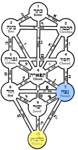
Moses had a goal – bringing his people to the Holy Land. He stuck with it for forty long years. He didn’t give up, along the way, although there were times when he was tempted, as when he asked God to take him out of His book. But in the end he stuck with it.
The same principles are true for all of us. Especially parents. Every parent is a leader to their children, guiding them on what they believe is the right path. Endurance is necessary: as a general rule, kids are in our care for 18 years, but even after they are grown, they are still your kids. And consistence is vitally important in successful parenting, as it is in any other form of leadership. For example, being inconsistent in disciplining people – whether it’s children, subordinates, or others where there may be a power relationship – will result in confusion. It won’t result in the desired response.
But it’s not just discipline that needs to be consistent – the care and concern a leader has for those he or she leads also needs to be enduring and consistent. Life is a marathon, not a sprint.
Do you have stamina, endurance, consistency in the ways you function as a leader? If not, today’s the day to resolve to work on this trait.
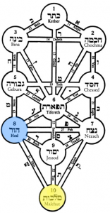
Great leaders are confident, but they are also humble. They are not afraid to admit they don’t know something; they are not afraid to seek counsel. A leader is not chosen because he/she knows everything. There’s a legend that says someone was once criticizing Henry Ford’s lack of formal education. He pointed to a button on his desk and said “you see that button? I press that button and some fella with a PhD comes and answers any question I have.”
Moses is also an example of a leader who was humble. He’s considered the most important leader the Jewish people have ever had – he led us out of Egypt and through 40 years in the desert, to the threshold of the promised land. Yet the tradition says he was also the most humble man who ever lived. He didn’t seek leadership, or glory, or fame (he even asked God to erase him from his book at one point).
When you function as a leader, are you humble enough to admit when you don’t know something? Or do you try to bluff your way through because your ego doesn’t want others to know you don’t have all the answers? You’ll be a more effective leader if you know to rely on others who may know more about particular subjects.
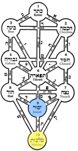
Today is the 48th day of the counting of the omer. When our ancestors were at Sinai, they were in the final stages of preparation for receiving the Torah.
Today is the day to question whether we’ve integrated all the previous elements of leadership. Do we have a solid foundation for not just our leadership, but for all of the ways we interact with other people?
Malchut of Malchut. Sovereignty of sovereignty, leadership of leadership.
We’re there. The last day of the counting of the omer. We are standing at Sinai, ready to receive the Torah.
Malchut of malchut is the point of actualization. Putting everything into action. Bringing ourselves, our personalities, into the world.
The 49 days of the omer are a bridge between Passover, the holiday of “freedom,” and Shavuot, the holiday of receiving Torah. The purpose of getting our freedom was to allow us to receive Torah. But receiving Torah requires preparation. You have to be ready to receive Torah.
There’s a remarkable verse in the Tanakh, Hosea 14:10: “For the ways of the Lord (Torah) are straight, and the righteous shall walk in them, and the transgressors shall stumble in them.”
How is it possible that one could stumble in the “ways of the Lord?” How could someone go astray in Torah?
The Baal Shem Tov (Besht), the first chasidic rabbi, said that the Torah is an amplifier: if you are a good person it will make you better, if you are wicked it will make you worse. Hence you must do teshuvah, repentance, BEFORE studying Torah.
For me, that’s the only explanation I have for the behavior of some people who identify as “religious” Jews. I’ve had discussions on Facebook with people who claim to be religious who have no sympathy whatsoever, for example, for African refugees who have landed in Israel. How can anyone who has studied the Torah, with its repeated commands to be kind to the stranger, for you were strangers in the land of Egypt, not have sympathy for strangers? Especially ones who are themselves fleeing war zones and oppression, just as Jews were fleeing the Nazis 70 years ago.
Over the last 49 days we’ve been doing that preparation. We’ve gone through each of 49 different aspects of our personalities.
Tomorrow is the big day. Tomorrow we have our symbolic encounter with revelation. We receive the Torah.
But are we truly ready? Are we worthy?
Chag sameach
Reb Barry